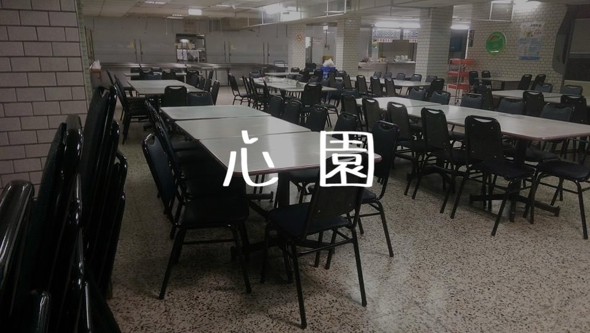

心園
心園，複合式餐廳，除了學餐外還有鬆餅屋，是心園特色之一，更是學生們必嚐的地方。
電話：02 2905 6295
營業時間：平日07:40–20:00 週六 10:00–20:00
麵食部
雖說是麵食區，但也是賣的很多，還有粽子？！
水餃大顆便宜，滷肉飯很香好吃，來這裡必吃他的滷肉飯才是王道！這裡的價位都很良心，食物很少雷人，但本人私心推薦牛肉燴飯，因為是我心目中燴飯的樣子。

自助餐
自助餐，跟仁園比就比較冷清，但高麗菜比仁園好吃多，菜都偏涼，如果怕熱食燙傷，平常喜歡吃冷飯的朋友可以嘗試。
新鮮水果
來心園必喝這裡的果汁，便宜又大杯，其中我最喜歡香蕉牛奶和木瓜牛奶，果汁每天都不太一樣，也會跟著時節走，而水果有完整也有切過冰好的，份量足夠價格也親民，如果吃不太下旁邊的主餐，也可選擇水果填填肚子。
巧瑋鬆餅屋
每次要走向心園都會聞到鬆餅的香味，令人垂涎三尺。
巧瑋鬆餅屋的鬆餅口味眾多，居然也有鹹的∑(ﾟДﾟ)，而且很有飽足感，甜鹹都能滿足你，有機會一定要來嘗試！
營業時間：平日07:40–19:00 週六10:00–17:00
Facebook